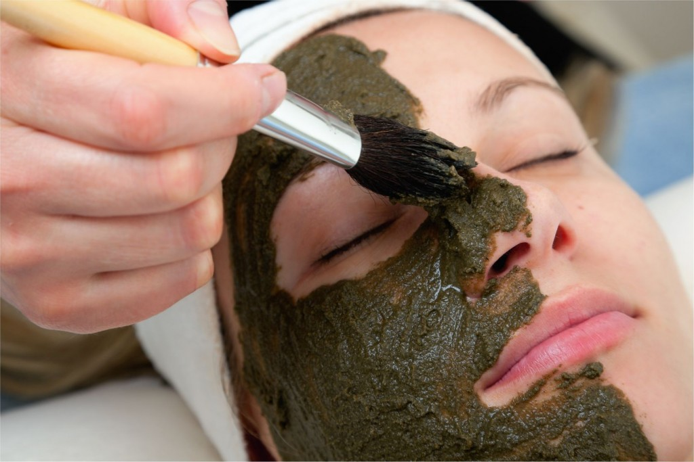
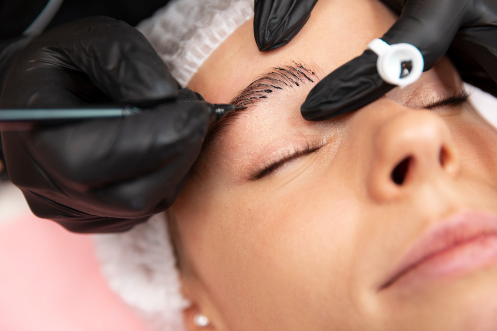

Peelig Organico de Algas Renueva tu piel en 5-7 dias, tratamiento activador de colágeno. Resultados piel mas turgente, iluminada y de aspecto más liso.
Extensiones de pestañas Embellecemos tu mirada de forma natural con los mejores productos del mercado, siguiendo la naturalidad de tus ojos y resguardando siempre la salud.

Micropigmentación PmU Implantación de pigmento en la primera capa de la piel. Corrije, define e intensifica el color natural. -Cejas -Labios -Cicatrices/Ojeras
